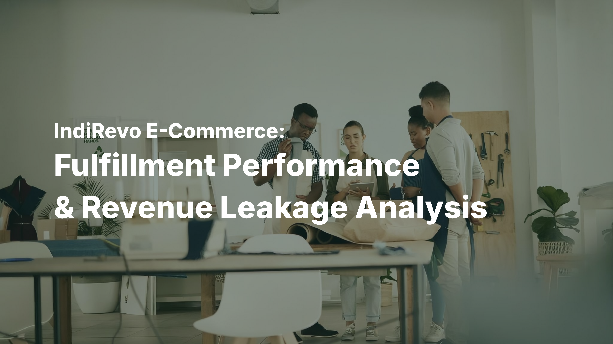
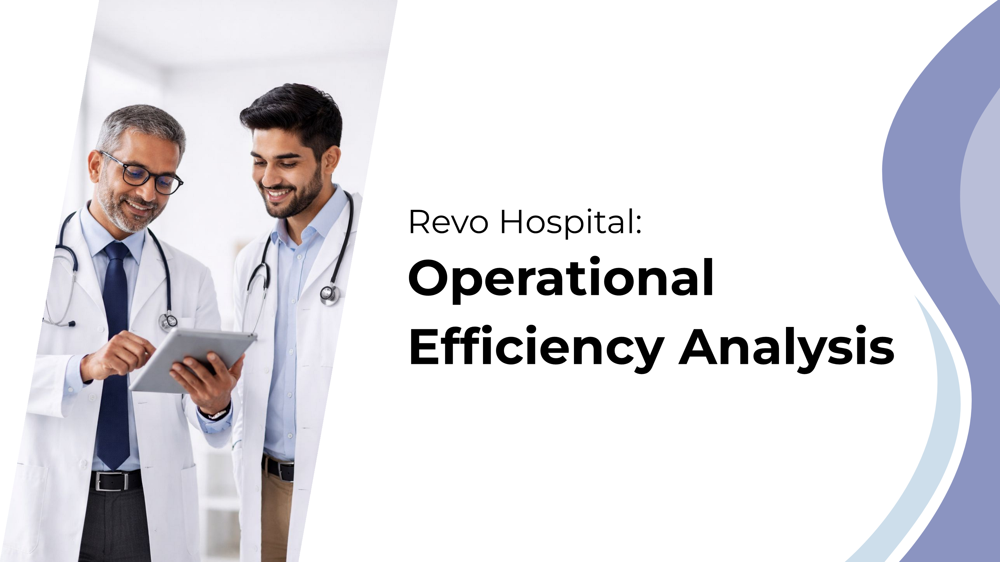
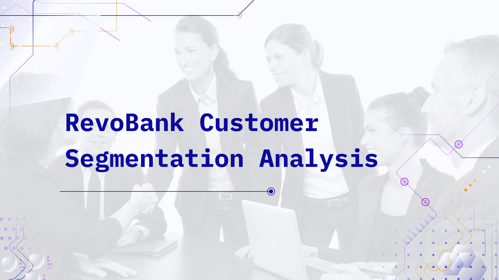

Projects
Selected projects showcasing adeptness in data analysis, illustrating the capacity to derive insights and recommendations.

IndiRevo E-Commerce: Fulfillment Performance and Revenue Leakage Analysis
End-to-end multi-segment analysis to reduce logistics-driven revenue leakage by optimizing order routing structures.

TheLook E-Commerce: Inventory Growth and Monthly Retention Analysis
Data-driven cohort and procurement analysis to identify critical drop-offs in monthly retention and stock levels.

Revo Hospital: Operational Efficiency Analysis
Operational efficiency analysis to optimize bed utilization and resolve patient flow bottlenecks across multiple branches.

RevoBank Customer Segmentation Analysis
Multi-dimensional K-Means clustering to transition card operations into a risk-aware, data-driven era of net profitability management.